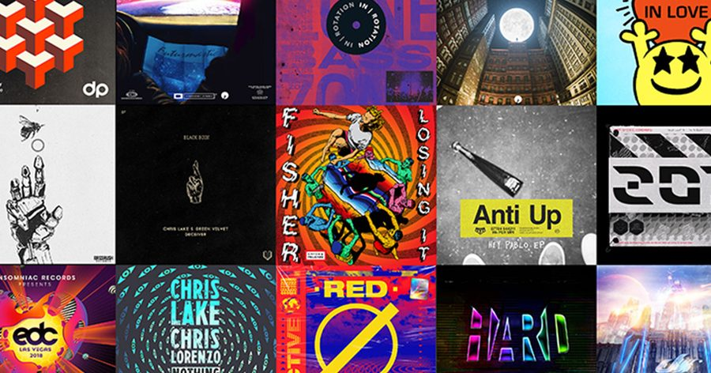

Insomniac Spreads Its Wings Into Distribution and Label Management With Insomniac Music Group


All of our Headliners are naturally well acquainted with Insomniac’s incredible selection of events and parties we throw every year, like Electric Daisy Carnival and Escape, while many of you might be equally aware of our Insomniac Records label and its many imprint offshoots, through which we’re able to bring loads of excellent music to the world. This month, we’re excited to announce that we’re taking it to the next step with the launch of Insomniac Music Group.
This new group will extend Insomniac’s internal label capabilities, meaning it is now able to offer distribution and management resources to other independent labels.
Some of Insomniac Records’ existing offshoots already include IN / ROTATION, Dreamstate Records, HARD Recs, Bassrush, and Discovery Project. With the launch of Insomniac Music Group, we’ll now also offer distribution and management services to artist imprints like NGHTMRE and SLANDER‘s Gud Vibrations label, Chris Lake‘s Black Book Records, Anti-up‘s (Chris Lorenzo and Chris Lake) Up the Anti, and Fisher‘s Catch & Release.
“The team at Insomniac Music Group has years of experience and has been a solid foundation for my label,” says Chris Lake. “The way they’ve helped gain exposure for tracks like ‘Deceiver’ and ‘Turn off the Lights’ has truly elevated the music on Black Book.”
Steven Haddad from Prodigy Artists, who works with NGHTMRE and SLANDER, says the launch of Insomniac Music Group solidifies an already strong relationship.
“Having been one of the first partners to back our Gud Vibrations events for the last four years, Insomniac has been instrumental in the growth of NGHTMRE and SLANDER’s touring business,” Haddad says. “It was an obvious choice for us to work with them on the new label. The entire Insomniac Music Group team has been a pleasure to work with and have created a great foundation for our back office, allowing us to focus on A&R and the other creative elements of our label.”
The launch of Insomniac Music Group has already been greeted with a monumental milestone, as the team recently secured a Grammy nomination for Fisher’s seemingly omnipresent tech weapon “Losing It.” Not a bad way to get this new enterprise off the ground.
Follow Insomniac Records on Facebook | Twitter | SoundCloud